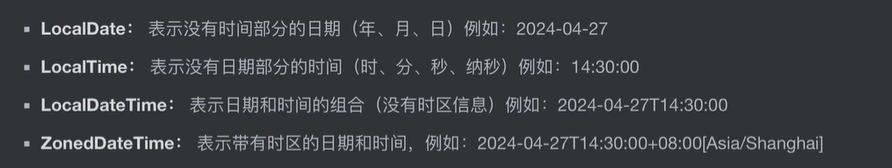

Java 日期时间 API：时区、时间戳与时间差
新版本的时间类 :

LocalDate date = LocalDate.now();
LocalDate date1 = LocalDate.of(2023,12 , 21) ;
LocalDate date2 = LocalDate.ofYearDay(2025,365) ; //查讯年的第几天
System.out.println(date.getDayOfWeek()); //一周的第几天
System.out.println(date.getMonth()); //获取月份
System.out.println(date.getMonthValue()); //获取月份数字
System.out.println(date.getDayOfMonth()); //获取月的第几天
System.out.println(date.getDayOfYear()); //年的第几天
System.out.println(date.getYear()); //获取年份
date = date.plusDays / Months / Years(1) ; //实现在原本日期基础上++ ;
sout(date.withYear(2026)) ; //在date基础上直接修改年份
LocalDate today1 = LocalDate.MAX;
LocalDate today2 = LocalDate.MIN;
LocalTime today2 = LocalTime.MAX;
LocalTime today2 = LocalTime.MIN;
LocalTime today3 = LocalTime.MIDNIGHT;
LocalTime today4 = LocalTime.NOON();
totay1.实例方法调用 //获取具体的年月日秒
LocalDateTime today7 = LocalDateTime.of(1232, 11 , 2 , 2 , 21);
LocalDateTime today8 = LocalTime.now().atDate(LocalDate.now()) ; //实现自动补全( atTime )
结合体两种类的实例方法和静态方法都可以实现调用
创建工具 ：
DateTimeFormatter dtf = DateTimeFormatter.ofPattern("yyyy-MM-dd HH:mm:ss");
使用ｐａｒｓｅ : 实现将日期格式进行转换为字符串 ( 按照自定义的形式实现转化 )
LocalDateTime now = LocalDateTime.parse( "2025-09-09 07:12:34" , formatter ) ;
sout( now ) ;
使用format 将字符串再转换回日期类 :
LocalDateTime time = LocalDateTime.now() ;
System.out.println(dtf3.format(time));
通过parse直接转化也是可以的 :
LocalDateTime from = LocalDateTime.from( fornatter.parse("2025-01-01 01:22:21")) ;
sout(from) ;
- OffsetDateTime类 : 携带偏移值的时区时间 :
OffsetDateTime hhh = OffsetDateTime.now(ZoneId.of("UTC+0"));
System.out.println(hhh);
LocalDateTime now = LocalDateTime.now(ZoneId.of("UTC-6"));
同样可以实现获取地区偏移的时间
- ZonedDateTime类 : 获取时区的时间
ZonedDateTime zoneId = ZonedDateTime.now() ;
System.out.println(zoneId);
Instant : 表示时间戳 , 表示某个时间点所代表的时间戳 ;
Instant intant = Instant.now() ;
Instant.ofEpochSecond(1) ; //通过时间戳创建日期
Instant.ofEpochSecond(0,1) ; //实现精确到毫秒
Duration / period类 : 计算时间差 :
Duration duration = Duration.ofHours(1);
Duration.between(LocalDate.now(),LocalDate.now().plusDays(1));
Period period = Period.ofDays(1);
LocalDate 不支持秒级的时间单位计算。LocalDate只有日期部分（年月日），没有时间部分（时分秒），所以不能计算秒数。